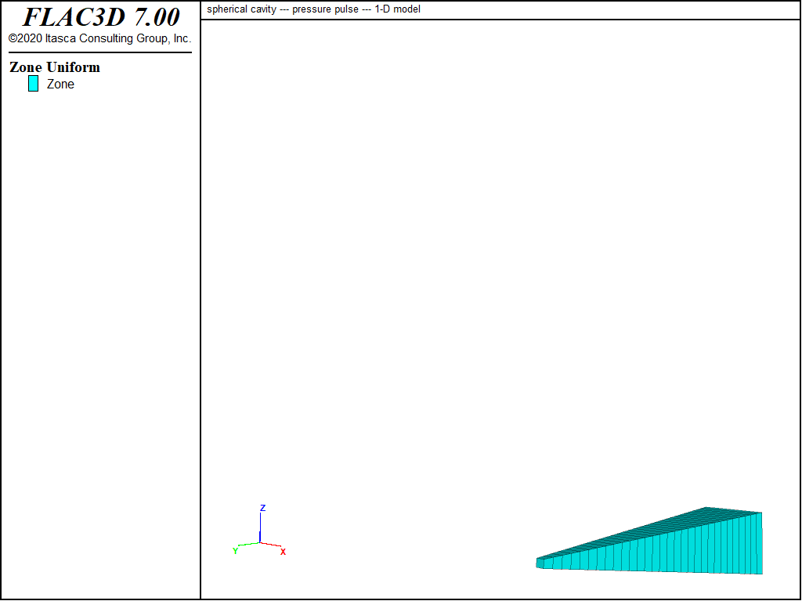
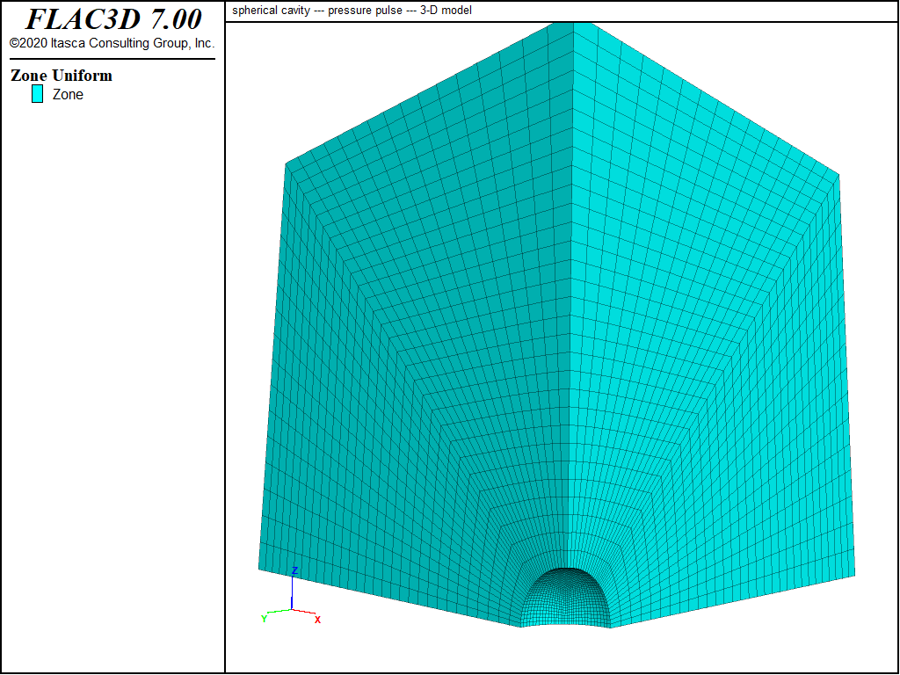
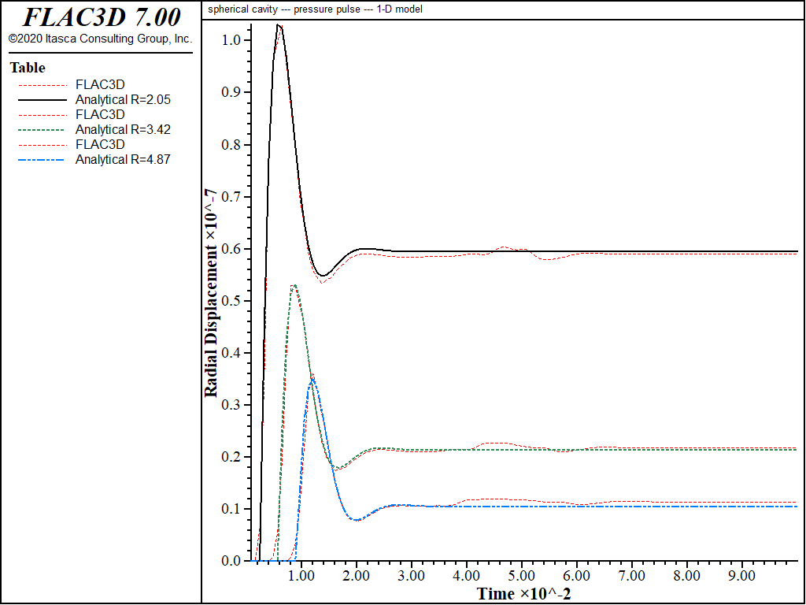
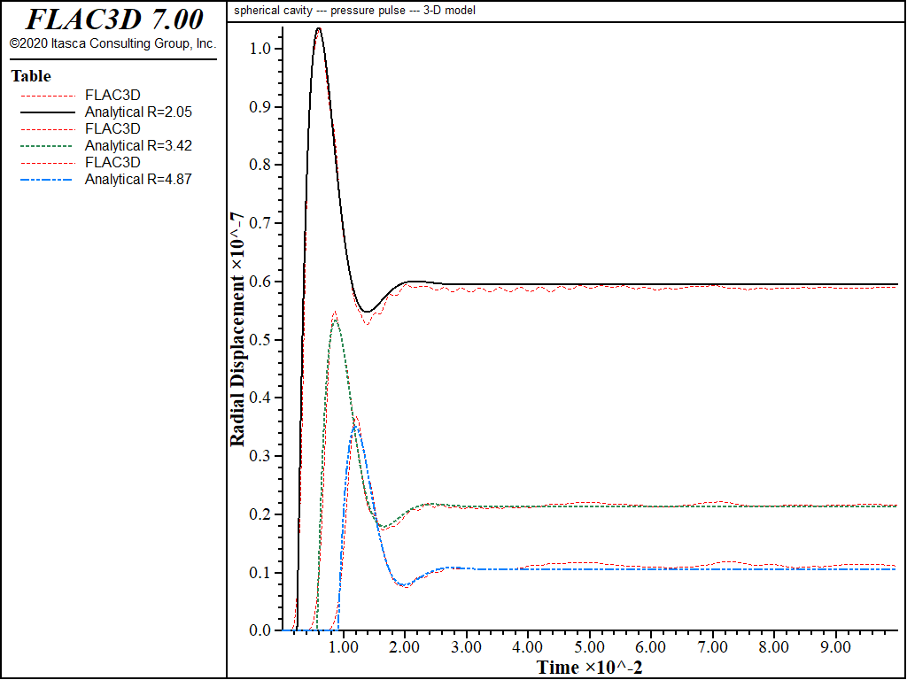

承受内部爆炸的空心球体
注意
要在 FLAC3D 中查看此工程，请使用菜单命令 。选择“Dynamic/SphericalPulse”，再选择“SphericalPulse.f3prj”即可加载。 本示例末尾给出了所使用的 主数据文件（main data files）。其余数据文件可在该工程中找到。
本问题涉及球体内脉冲压力（爆炸）所引起的球面波传播。在无界（即无限）介质中，可以存在两种类型的波：压缩波和剪切波。在本问题中，问题的轴对称特性消除了剪切波。因此，只需寻求压缩波的解。该问题检验了 FLAC3D 的动力分析能力，适用于冲击与爆炸模拟。
在假定材料为弹性且各向同性的前提下，该问题的解析解由 Blake（1952）导出。该解基于以下控制方程：
| 其中： | \(C_p\) | = 压缩波波速； |
| \(t\) | = 时间； | |
| \(\phi\) | = 势函数；以及 | |
| \(\bigtriangledown^2\) | = 拉普拉斯算子。 |
设 \(p(t)\) 为一个脉冲，它在 \(t\) = 0 时从零跃升至 \(p_0\)，随后以时间常数 \(\alpha^{-1}\) 呈指数衰减。因此，压力函数可定义为
本问题将采用压力的阶跃函数（\(\alpha\) = 0）。对于这样的压力函数，满足控制方程的势函数为
| 其中： | \(a\) | = 球体半径； |
| \(K\) | = \({{1 - \nu} \over {2 (1 - 2 \nu)}}\); | |
| \(\nu\) | = 泊松比； | |
| \(r\) | = 径向坐标； | |
| \(\alpha_0\) | = \({{C_p} \over {2 a K}}\) = 辐射阻尼常数； | |
| \(\tau\) | = \(t - {{ r - a} \over {C_p}}\)；以及 | |
| \(\omega_0\) | = \({{c} \over {2 a K}}\ \sqrt{4 K - 1}\) = 固有频率。 |
将势函数对径向距离求导，即可得到径向位移。
嵌入无限各向同性介质中的球体采用两种方式模拟。图 1（Figures 1） 和 2 给出了用于模拟的两种不同网格。第一种网格是一维表示，其中一根四周均为滚动边界的狭窄锥形管近似球对称条件。第二种网格是完整的三维网格，但受三个对称平面约束（即模拟问题的八分之一）。内边界半径假定为 10 m；对于一维情形，外边界位于内边界距离的十倍处。
对于两种网格，对称轴处的法向运动均被约束，并在外边界上施加黏性条件以吸收波。本问题所用的材料性质为
| 剪切模量（\(G\)） | 1 × 1010 |
| 体积模量（\(K\)） | 1.665 × 1010 Pa |
| 密度（\(\rho\)） | 1675 kg/m3 |
在内边界施加等于 1000 Pa 的压力以模拟爆破。


图 1：用于近似球对称的一维网格。


图 2：三维网格——模拟问题的八分之一。
在 \(r\) = 2.05\(a\)、3.42\(a\) 和 4.87\(a\) 处记录至 0.1 秒的径向位移时程，分别在一维和三维模拟的图 3（Figures 3） 和 4 中给出。两种情形下都可注意到远离球体位置处响应的延迟。两种情形下，FLAC3D 都能捕捉峰值状态与稳态的响应。后期的波动是由于辐射波未被黏性边界完全吸收所致。


图 3：r = 2.05a、3.42a 和 4.87a 处的径向位移时程（一维情形）。


图 4：r = 2.05a、3.42a 和 4.87a 处的径向位移时程（三维情形）。
参考文献
Blake, F. G. “Spherical Wave Propagation in Solid Media,” J. Acous. Soc. Am., 24(2), 211-215 (1952).
数据文件
SphericalPulse1D.dat
model new
model large-strain off
model title "spherical cavity --- pressure pulse --- 1-D model"
model configure dynamic
;--- 生成网格单元，表示球体上的一维柱。
zone create brick point 0 (10,0,0) point 1 (100,0,0) ...
point 3 (9.8769,1.5643,0) point 6 (98.770,15.645,0) ...
point 2 (9.8769,0,-1.5643) point 4 (98.770,0,-15.645) ...
point 5 (9.7552,1.5643,-1.5451) ...
point 7 (97.555,15.645,-15.450) ...
size 30 1 1 ratio 1.01 1 1
;--- 分配本构模型和属性
zone cmodel assign elastic
zone property shear=1e10 bulk=1.665e10 density=1675
;--- 命名边界面
zone face skin
;--- 施加边界条件
zone face apply velocity-normal 0 range group 'South' or 'North'
zone face apply velocity-normal 0 range group 'Top' or 'Bottom'
zone face apply stress-normal -1000 range group 'West'
zone face apply quiet range group 'East'
;--- 设置阻尼
zone dynamic damping rayleigh 0.01 50 stiffness
;--- 记录一些历史数据
history interval 10
model history name='time' dynamic time-total
zone history name='xd1' displacement-x position (20.5,0,0)
zone history name='xd2' displacement-x position (34.2,0,0)
zone history name='xd3' displacement-x position (48.7,0,0)
;--- 运行模型 0.1 秒，然后保存
model solve time-total=0.1
model save 'SphericalPulse1D'
SphericalPulse3D.dat
model new
model large-strain off
fish automatic-create off
model title 'spherical cavity --- pressure pulse --- 3-D model'
model configure dynamic
;--- 创建八分之一长方体的网格单元
zone create radial-brick edge 100 size 16,16,16,30 ...
rat 1 1 1 1.01 dimension 10,10,10
;--- 使用 FISH 函数将立方体转换为球体
fish define make_sphere
; 遍历所有网格点（GP），并重新映射其坐标：
loop foreach local p_gp gp.list
local p = gp.pos(p_gp)
local dist = math.mag(p)
local k = 10.0/dist
local a = p * k
local maxp = math.max(p->x,math.max(p->y,p->z))
k = 100.0/maxp
local b = p * k
local u = (maxp-10.0)/90.0
gp.pos(p_gp) = a + (b-a)*u
end_loop
end
[make_sphere]
;--- 分配本构模型和属性
zone cmodel assign elastic
zone property shear=1e10 bulk=1.665e10 density=1675
;--- 命名边界面
zone face skin
;--- 设置边界条件
zone face apply velocity-normal 0 range group 'West'
zone face apply velocity-normal 0 range group 'South'
zone face apply velocity-normal 0 range group 'Bottom2'
zone face apply quiet range group 'East' or 'North' or 'Top'
zone face apply stress-normal -1000 range group 'Bottom1
;--- 设置阻尼
zone dynamic damping rayleigh 0.01 50 stiffness
;--- 记录一些历史数据
history interval 10
model history name='time' dynamic time-total
zone history name='xd1' displacement-x position (20.5,0,0)
zone history name='xd2' displacement-x position (34.2,0,0)
zone history name='xd3' displacement-x position (48.7,0,0)
;--- 运行模型 0.1 秒，然后保存
model solve time-total=0.1
model save 'SphericalPulse3D'
| 这些内容对您有帮助吗？… | FLAC3D © 2019, Itasca | 原文更新于 2020 年 10 月 8 日 |